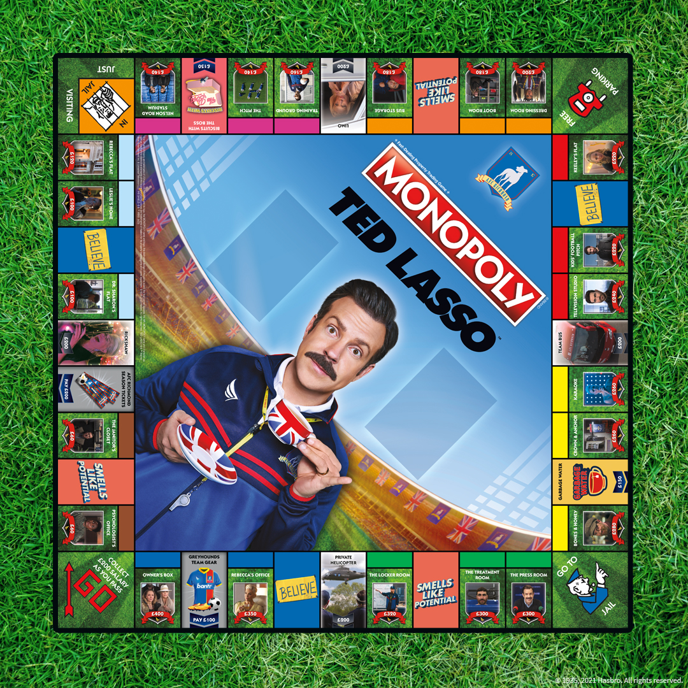
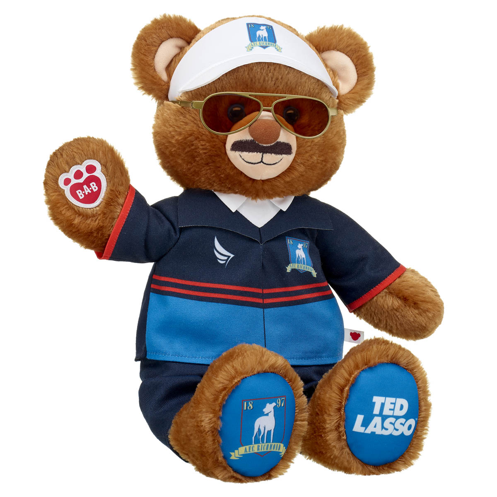
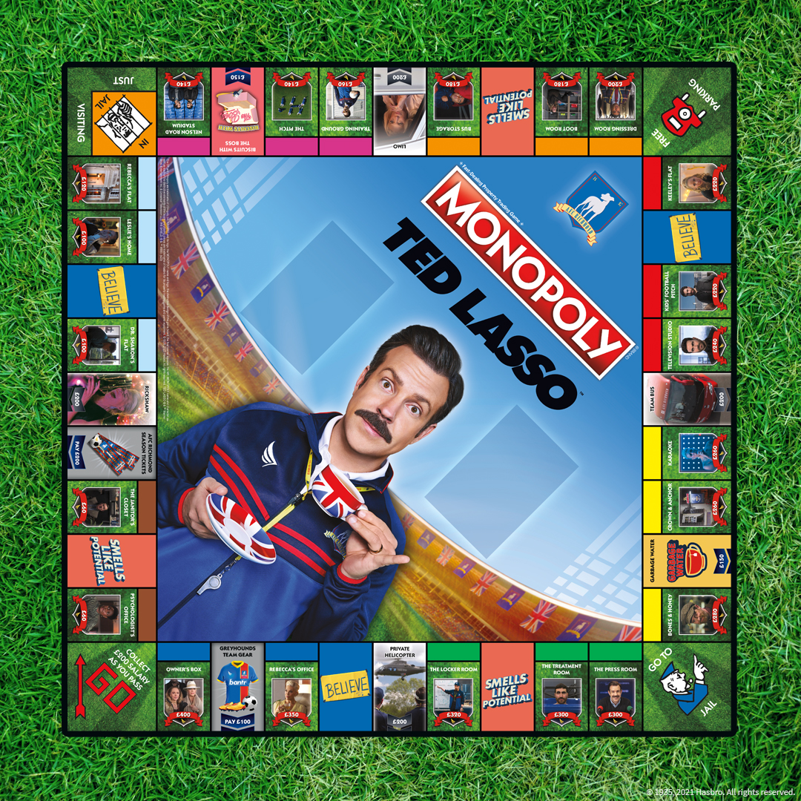
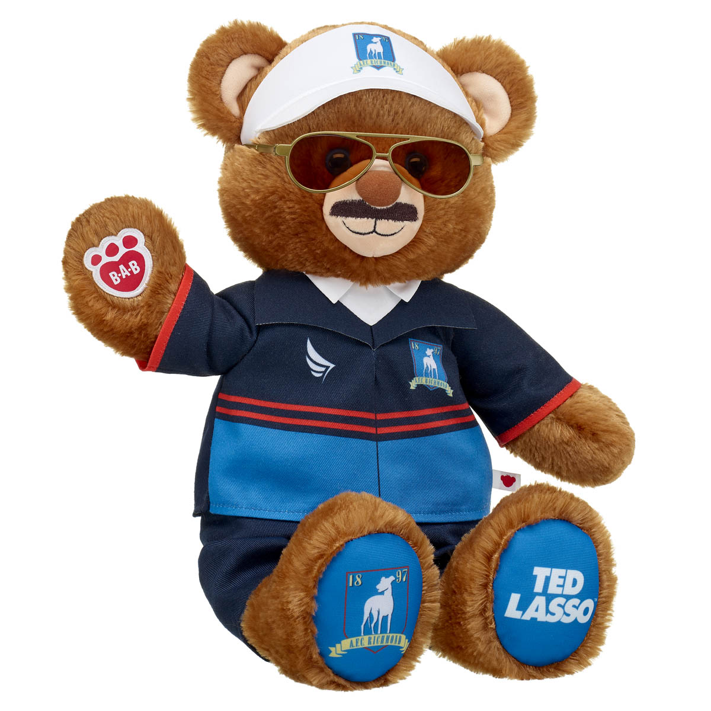
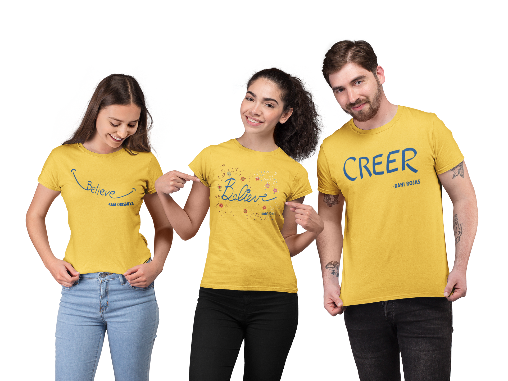
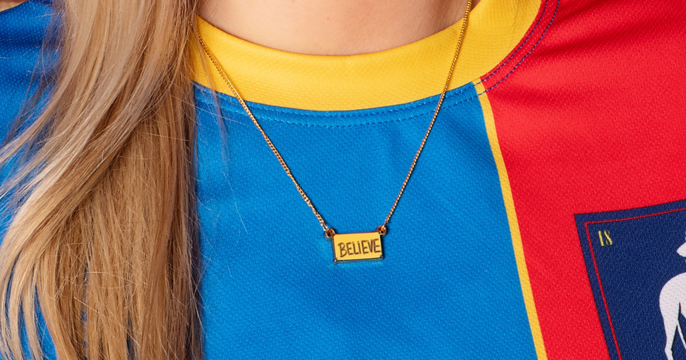

Consumer Products
March 6, 2023
Warner Bros. Discovery Global Consumer Products Announces a New Lineup of Products in Honor of “Ted Lasso” Season Three Consumer Products
 


 (Burbank, CA) — The third season of Believing is almost here! Today, Warner Bros. Discovery Global Consumer Products (WBDGCP) announced a new lineup of Ted Lasso merchandise in advance of season three of the Emmy® Award-winning comedy TED LASSO. Giving fans something worth cheering for, the WB Shop will release a new lineup of Ted Lasso gear. Additionally, WBDGCP teamed up with popular licensees, including Build-A-Bear, Jeni’s Splendid Ice Creams, USAOPOLY, Funko, McFARLANE TOYS, UNO, Stance, and Insight Editions, to give fans more ways to celebrate the heartwarming wisdom of the beloved coach. The new season of TED LASSO will premiere around the world on Wednesday, March 15, followed by new episodes releasing weekly on Wednesdays. The new WB Shop Ted Lasso products kicking off the season include:
 For fans who can’t wait for the March debut, the BELIEVE capsule, available today, features apparel, accessories, home/office products, and sporting goods with Ted Lasso’s feel-good motto including a brand-new and exclusive tee collection inspired by each of the character’s Believe signs as seen in the season three teaser trailer ($24.95). A Believe necklace ($14.95) to help accessorize and a headband ($24.95) to channel fans’ inner Jamie. And for the first time, a Ted Lasso inspired soccer ball ($42.95), as well as a dart board ($99.95), gives fans a way to get in the game.
Also launching on the WB Shop today, new AFC Richmond apparel and accessories to show off your team spirit. The latest AFC Richmond gear includes sweatshirts ($44.95-$69.95), a cropped hoodie ($49.95), women’s muscle tank ($29.95), AFC Richmond arrows sweatpants ($54.95) and headband ($24.95), all sporting the team’s iconic logo.
For the season three premiere on March 15, the WB Shop will release the first customizable Ted Lasso Bobblehead character t-shirts. Shoppers select the t-shirt color of their choice (black or white) and pick from six different characters to make a customized shirt ($24.95).
Perfect for spring flings, take Ted Lasso to the beach or pool with seasonal home goods, available on March 15. Make a statement and engage your audience just like Keeley with a pool float ($64.95), beach tote bag ($43.95) and towel in sunny yellow and blue AFC Richmond colors and logos ($48.95).
Cheer on the AFC Richmond Greyhounds with the exclusive season three replica jersey. This AFC Richmond jersey is lightweight, breathable, and designed to look just like the ones you see on the field in TED LASSO with three personalization options: player name and number, standalone (no name/number), and personalized (your own name). Available for pre-order on March 15 ($69.95).
Additional Season three products from WBDGCP’s world-class licensees include:
Jeni’s Splendid Ice Creams
– Fans of the show who have ogled Ted’s homemade shortbread cookies from their couches can now eat along with Rebecca - thanks to Jeni’s new Biscuits with the Boss ice cream. A conversation-worthy flavor that tastes like falling out of the lucky tree, hitting every branch on the way down, and ending up in a pool of cash with homemade, buttery shortbread cookies topped with the perfect sprinkle of flaky sea salt. It’s a pleasantly addicting salted butter sweet cream riddled with shortbread cookie crumbles. Available in Jeni’s scoop shops, online for nationwide shipping, and via the Jeni’s app for pickup and delivery.Build-A-Bear
offers a soul-warming team of bears, including online exclusives and bundles. If you believe in AFC Richmond just as much as Ted Lasso does, then the one-of-a-kind Coach Lasso bear dressed in his team gear with gold sunglasses and white shoes will let fans show their team spirit. The Ted Lasso Bear Teacup Bundle is inspired by Ted’s disdain for “garbage water” and the "Biscuits with the Boss" Bundle Bear is the ultimate treat! Other online exclusives include the Happy Hugs Teddy Ted Lasso Gift Set and more. Individual accessories include the Ted Lasso Teacup, "Biscuits with the Boss" Box, the Ted Lasso AFC Richmond Soccer Uniform and AFC Richmond Soccer Scarf. Available online for $6.50 to $63.50.Monopoly
– Bring inspiration directly from the sidelines to your table with the ultimate game for AFC Richmond fans everywhere. MONOPOLY®: Ted Lasso, a brand-new release from USAOPOLY, celebrates the critically acclaimed, Emmy® Award-winning comedy series where fans can believe in Believe! Buy, sell, and trade properties like Nelson Road Stadium, The Owner’s Box, and Keeley’s Flat while advancing or gaining riches with Lasso-inspired Believe (Community Chest) cards and Smells Like Potential (Chance) cards. Customized tokens include some of the most memorable symbols from the show in miniature form; Ted’s Visor, an Army Man, a Goldfish (aka the happiest animal in the world), a box of those famous little biscuits, a teacup, and everyone’s favorite Believe sign. Rally the team for a night of optimism, determination and laughs with MONOPOLY®: Ted Lasso. Available to ship on March 28. Pre-order at WB Shop for $44.99.McFARLANE TOYS
– This incredibly detailed limited edition 6” scale posed figure of Ted Lasso includes a scenic, printed back-drop and environmental base for display. Also features an art card with numbered certificate of authenticity and a hidden surprise! Available for pre-order at WB Shop, Target, Amazon, Entertainment Earth & Big Bad Toys Store. In stores Spring 2023.UNO
– Fans can score big with the new UNO® Ted Lasso™ card game featuring graphics inspired by favorite characters and scenes from the beloved series. Players can try to match colors and numbers and will want to draw “The Roy Kent Grunt” card with a special rule that will have someone drawing extra cards. The UNO Ted Lasso card game is available for presale on Amazon starting March 7th for $6.49.Stance
– Filled with positive energy and good vibes, two new sock styles inspired by the AFC Richmond football club mark and Coach Ted Lasso are the ultimate gift for any show fan. Available April 1st at Stance.com, as well as various retail partners across the globe for $19.99.FUNKO POP
Puzzle! – Watch your favorite pop culture characters take shape as you put together 500 pieces of fun! This 18” x 24” puzzle uses high-quality materials and vibrant Pop! styled artwork. It’s perfect puzzling for the whole family, featuring an original illustration inspired by the hit show Ted Lasso. Available now for pre-order at WB Shop and Amazon for $14.99.Collectors rejoice! Other popular Ted Lasso products that launched earlier include the Fisher-Price Little People Ted Lasso Collector Set which debuted last fall but are high on the list of fan must-haves. Crocs also released a Ted Lasso Collection with shoes and Jibbitz™ charms to make your Crocs game-ready.
Season three of TED LASSO premieres Wednesday, March 15.